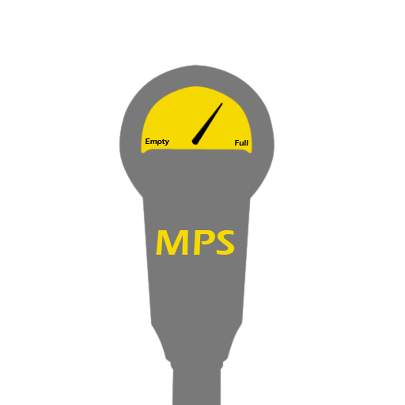
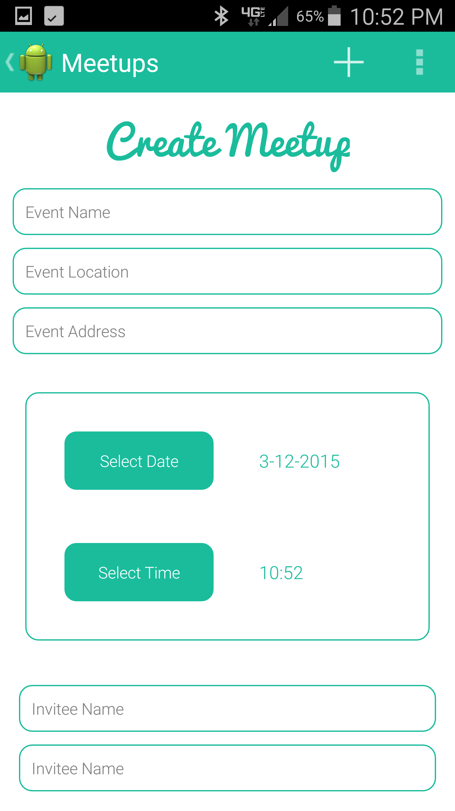
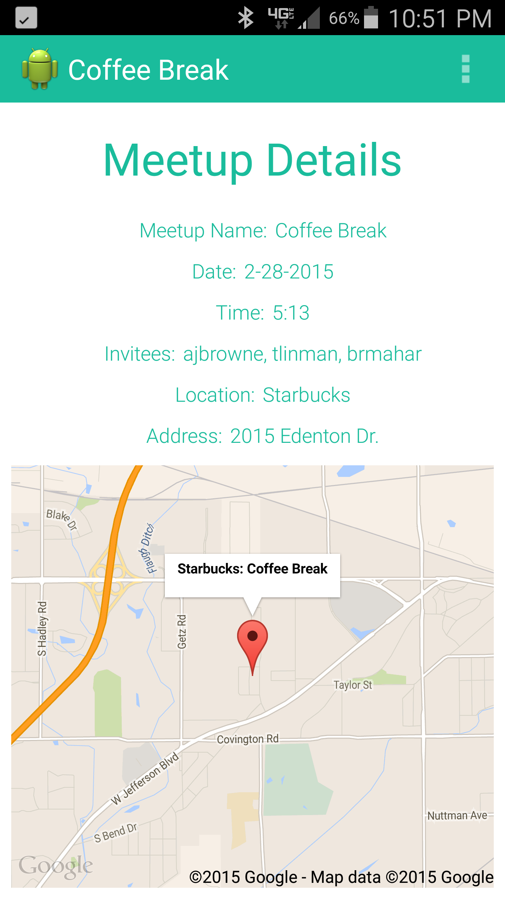
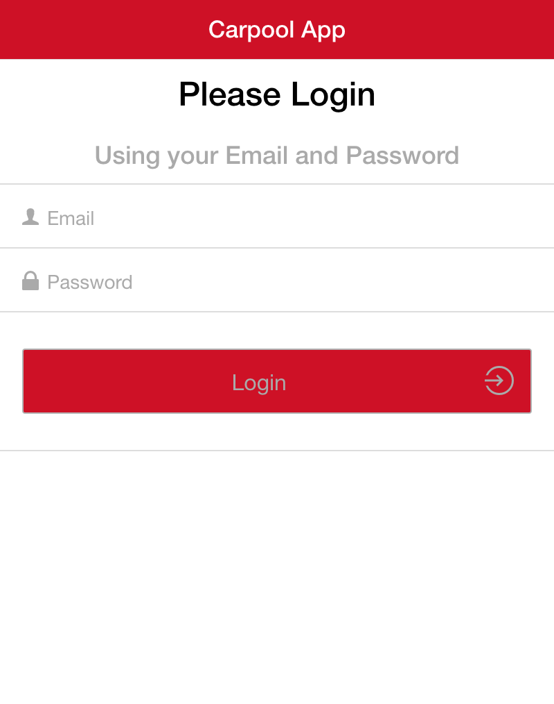
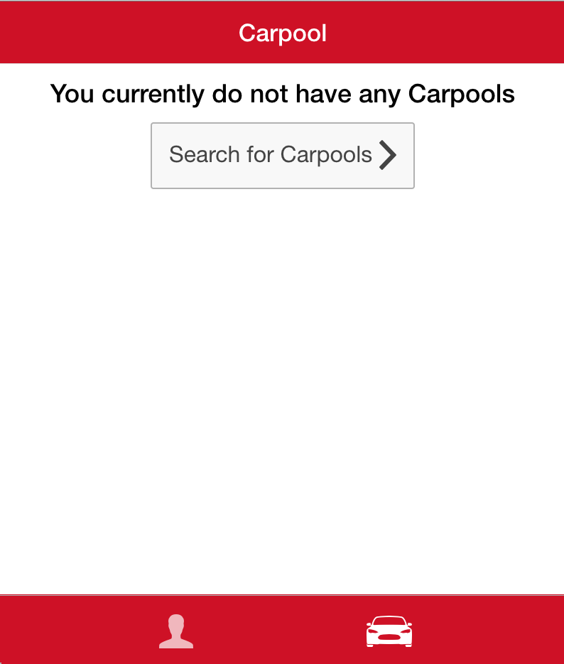
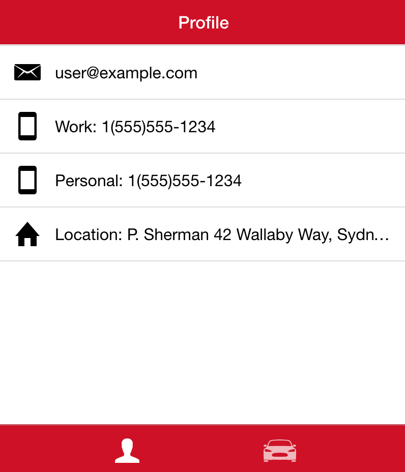
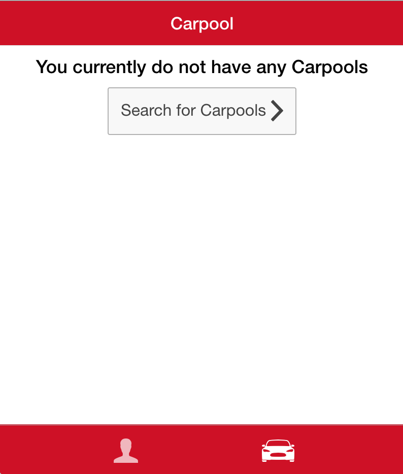
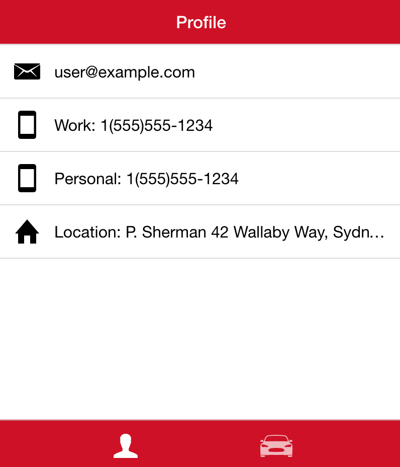
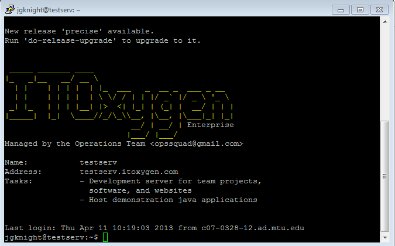
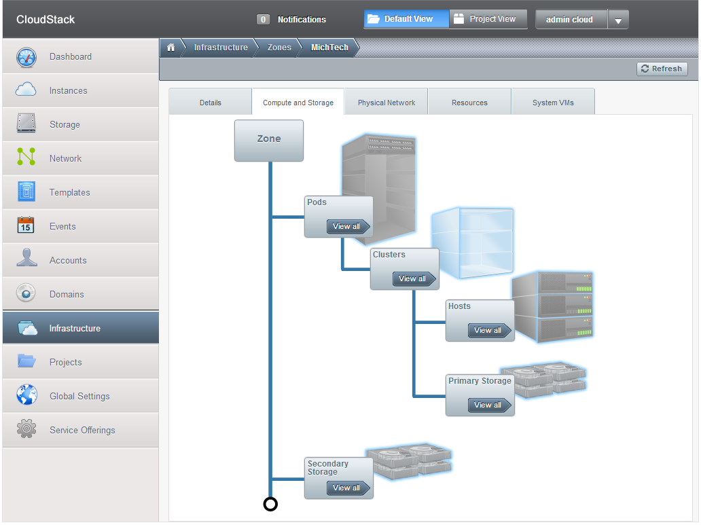

We focus on
Mobile
technology
Individuals who strive to learn outside the classroom!
Mobile Development
Android Development
Target Ford - Smart Trips
Pull live data from your Ford vehicle and get related information from nearby Target stores
MTU Parking Service
Crowdsourcing data to collect analitics on parking data at Michigan Tech
MTU Meetup
 Invite friends to a quick meetup based on their proximity to you
Cross Platform
Target Mobile
 



Virtualization
Target Bedrock
Creating a way for ITO members to requests temproary VMs
Hyper-V
Creating a small-scale virutalization platform using Microsoft Hyper-V
Operations
Test Server for Teams
Operations
24/7 On Call
Provide Linux servers and secure the ITOxygen domain and lab computers
Web Dev
ITOxygen Website
Creating a new web presence for ITOxygen to reflect the innovative and modern direction of the enterprise
Kyocera
Using big data tools to transform data into meaningful information in database form
Highland Copper
Evaluating network configurations, data backup plans and security plans for Highland Copper Mining
Houghton Tech Consulting
Working with local business to help improve technology infrastructure
Impact on Campus

Organizing transportation to large Hackathon events for students
Hacking - Learning - Opportunities
THE END
Thank you, questions?
- Tyler Inman - tlinman@mtu.edu
- Derek Daniels - dbdaniel@mtu.edu
- Phil Middleton - pjmiddle@mtu.edu